Defense Machanism
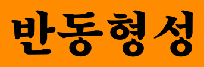
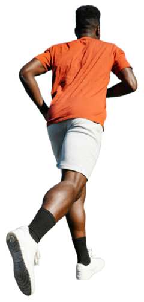
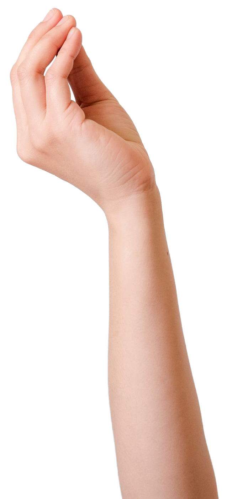
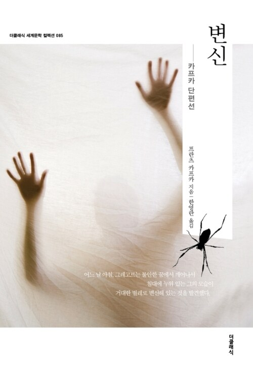
그레고르 잠자
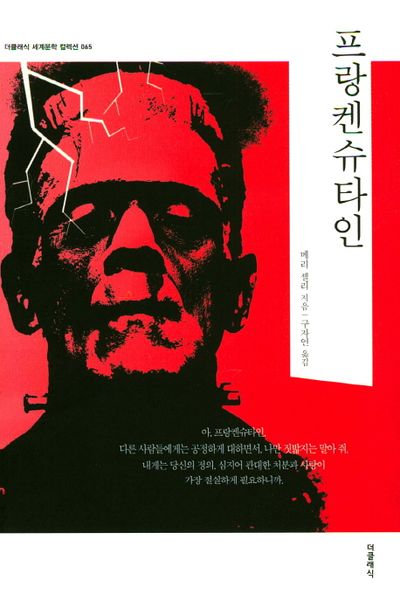
빅터 프랑켄슈타인
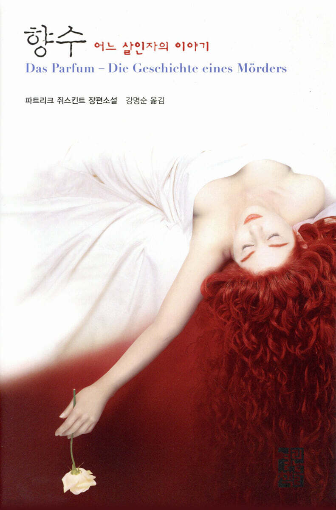
장바티스트 그르누이
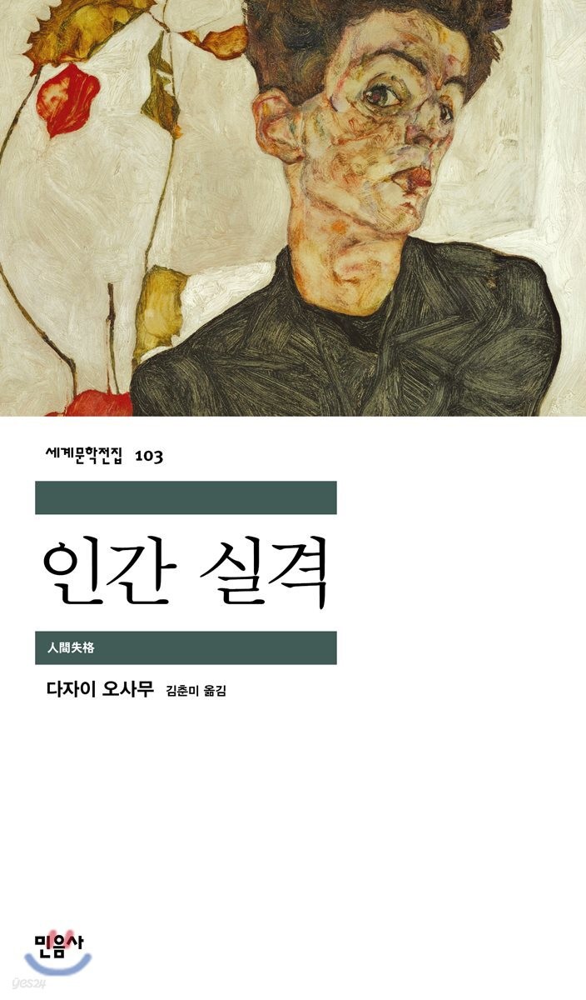
오바 요조
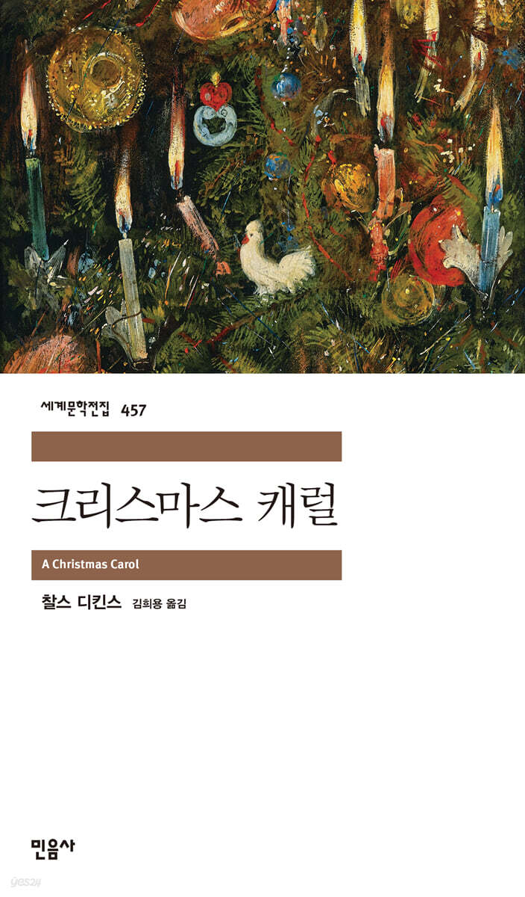
스크루지
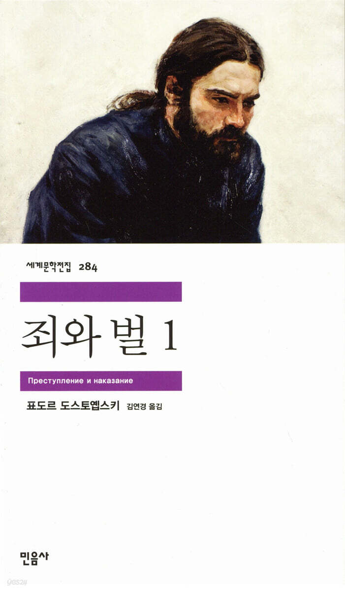
라스콜리니코프
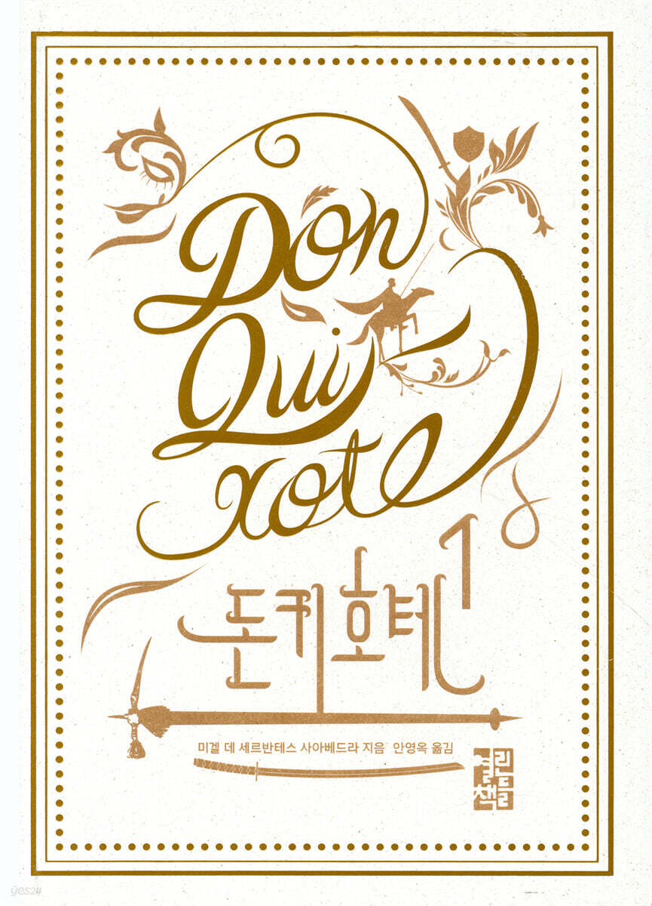
돈키호테
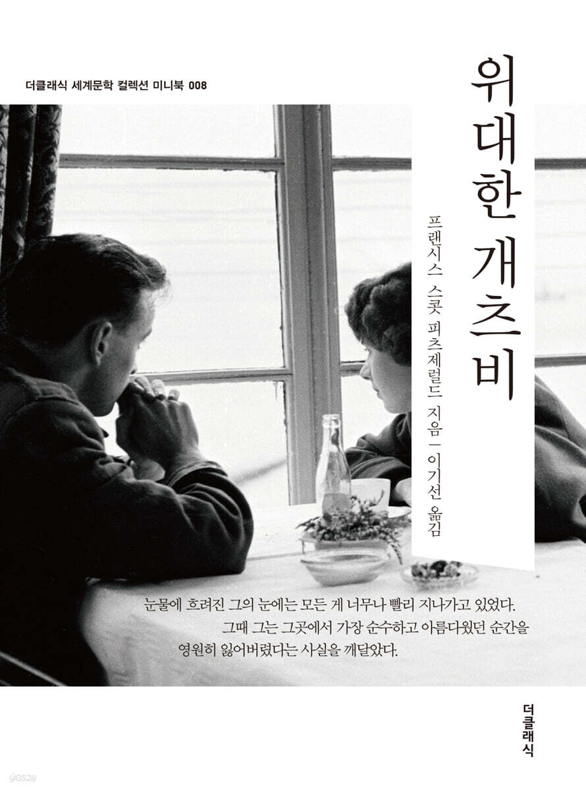
개츠비
"나 원래 뒤끝 없어"도 방어기제입니다.
"다 널 생각해서 하는 말이야"도 방어기제입니다.
"차라리 잘된 일인지도 몰라"도 방어기제입니다.
"그냥 웃자고 한 소리에 왜 진지해져?"도 방어기제입니다.
"사람은 누구나 다 그래"도 방어기제입니다.
"난 괜찮으니까 신경 쓰지 마"도 방어기제입니다.
"어차피 기대도 안 했어"도 방어기제입니다.
"상처 안 받았어, 그냥 피곤해서 그래"도 방어기제입니다.
"나 원래 이런 사람인 거 알잖아"도 방어기제입니다.
"네가 그렇게 생각한다면 그런 거겠지"도 방어기제입니다.
"내가 언제 화를 냈다고 그래?"도 방어기제입니다.
"그 사람 입장에선 그럴 수도 있지 뭐"도 방어기제입니다.
"내 잘못만은 아니잖아"도 방어기제입니다.
"원래 인간관계는 다 거기서 거기야"도 방어기제입니다.
"딱히 서운한 건 없는데 그냥 연락하기 싫어"도 방어기제입니다.